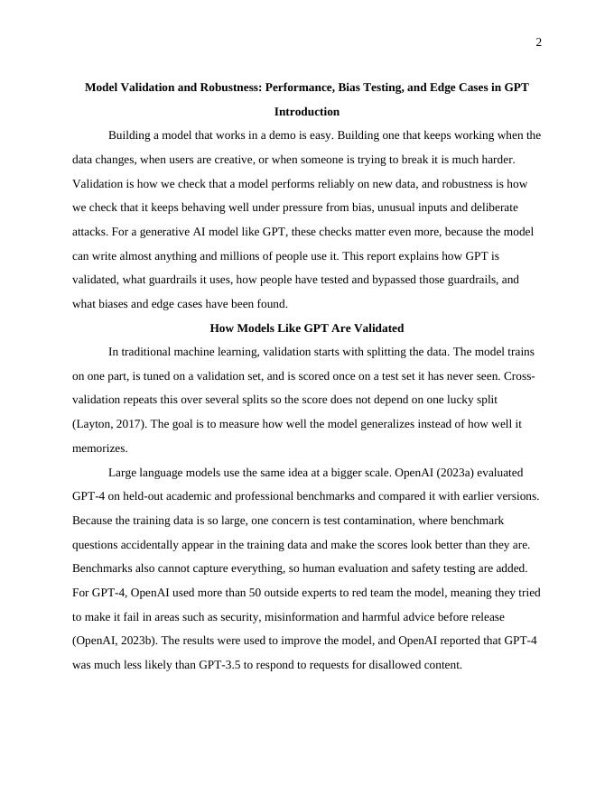

A research report on how generative AI models are tested for reliability, what guardrails protect them, how those guardrails get bypassed, and what biases and edge cases have been found.

A model that works in a demo can still fail when the data changes, when users get creative, or when someone tries to break it. Validation checks that a model performs reliably on new data, and robustness checks that it keeps behaving well under bias, unusual inputs and attacks. This matters even more for GPT, which can write almost anything and is used by millions of people.
The 4-page report covers four areas:
To explain how validation and robustness testing work for generative AI, and to show with real research why guardrails need continuous testing and not a one-time check.
Published research papers and model documentation from OpenAI, scikit-learn concepts for validation (train/test splits and cross-validation), and an AI assistant to help with research and drafting.
This artifact shows I can evaluate the reliability and safety of an AI system and explain the risks clearly. It can help teams that need to decide how to test a model before relying on it.
My other artifacts focus on algorithms, neural networks and training costs. This one focuses on testing and risk. My background in authentication and access control helps me think like a defender: assume the control will be probed, and test the places where it is weakest, such as other languages.
Organizations are adopting generative AI quickly, and many failures come from missing testing, not from the model design. Validation, bias testing and guardrail review are core skills for anyone building, buying or governing AI.
Abid, A., Farooqi, M., & Zou, J. (2021). Persistent anti-Muslim bias in large language models. Proceedings of the 2021 AAAI/ACM Conference on AI, Ethics, and Society, 298–306. https://doi.org/10.1145/3461702.3462624
Brown, T. B., et al. (2020). Language models are few-shot learners. Advances in Neural Information Processing Systems, 33, 1877–1901.
Ji, Z., et al. (2023). Survey of hallucination in natural language generation. ACM Computing Surveys, 55(12). https://doi.org/10.1145/3571730
OpenAI. (2023). GPT-4 system card. https://cdn.openai.com/papers/gpt-4-system-card.pdf
Ouyang, L., et al. (2022). Training language models to follow instructions with human feedback. arXiv. https://arxiv.org/abs/2203.02155
Wei, A., Haghtalab, N., & Steinhardt, J. (2023). Jailbroken: How does LLM safety training fail? Advances in Neural Information Processing Systems, 36.
Yong, Z.-X., Menghini, C., & Bach, S. H. (2023). Low-resource languages jailbreak GPT-4. arXiv. https://arxiv.org/abs/2310.02446
Zou, A., et al. (2023). Universal and transferable adversarial attacks on aligned language models. arXiv. https://arxiv.org/abs/2307.15043